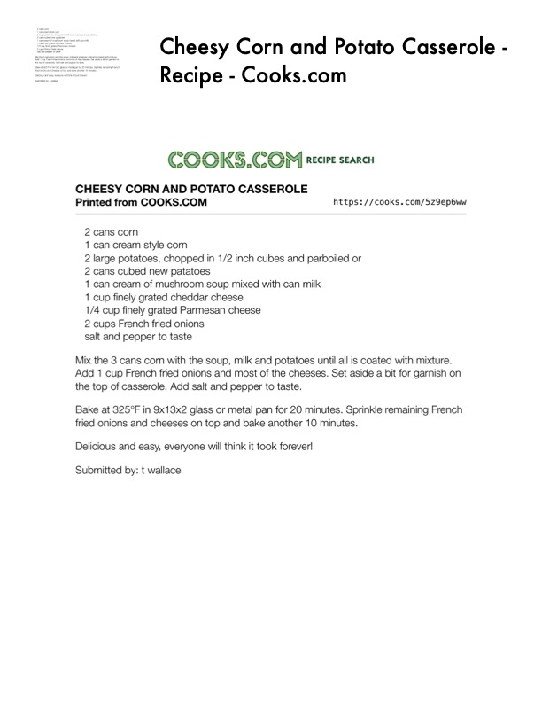

Cheesy Corn and Potato Casserole -

Original cookbook page 702
Ingredients
- 2 cans corn
- 1 can cream style corn
- 2 large potatoes, chopped in 1/2 inch cubes and parboiled or
- 2 cans cubed new patatoes
- 1 can cream of mushroom soup mixed with can milk
- 1 cup finely grated cheddar cheese
- 1/4 cup finely grated Parmesan cheese
- 2 cups French fried onions
Instructions
- Mix the 3 cans corn with the soup, milk and potatoes until all is coated Add 1 cup French fried onions and most of the cheeses. Set aside a bit Bake at 325°F in 9x13x2 glass or metal pan for 20 minutes. Sprinkle rei
Recipe #702 from collection